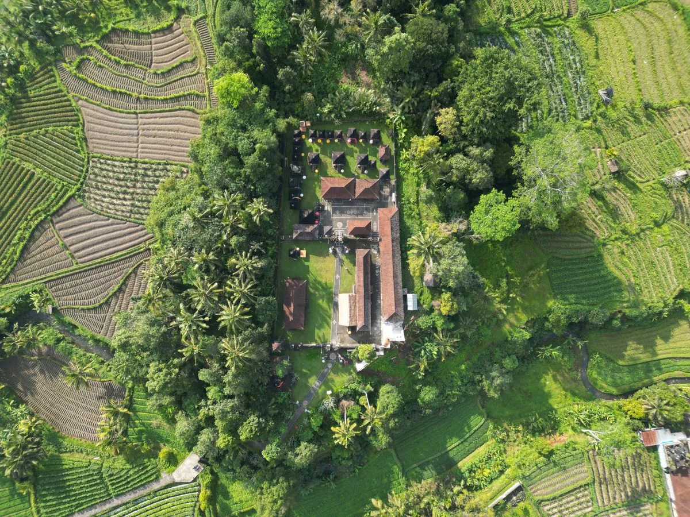
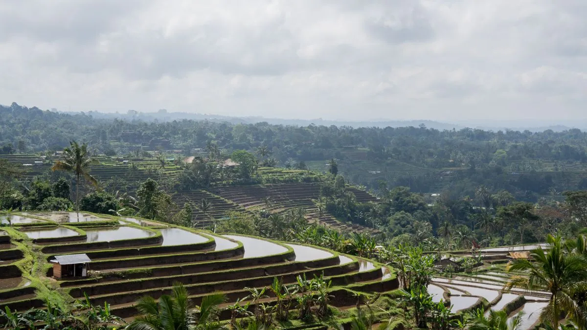
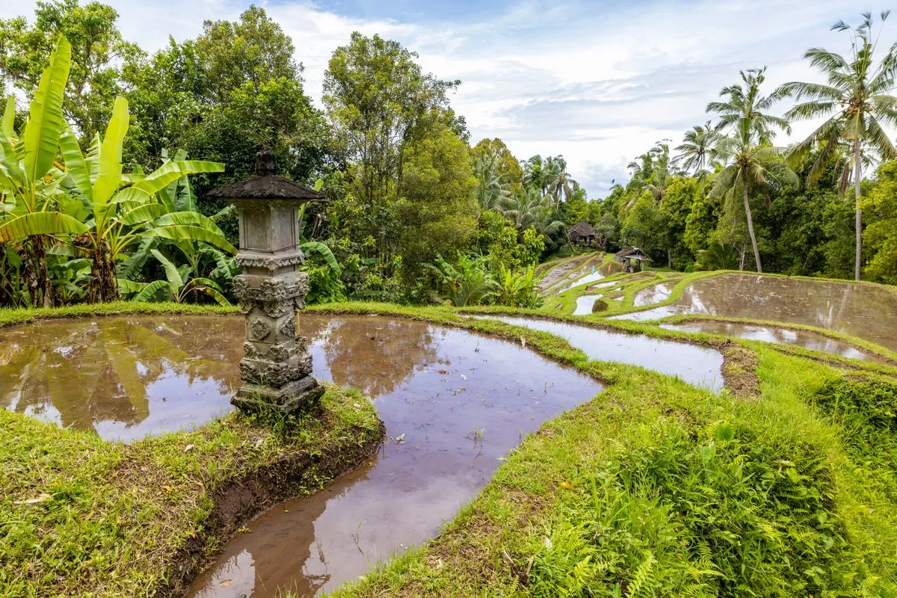

A Ilha dos Deuses com foco puramente espiritual.
Muitos buscam Bali pelas praias ou pelas festas, mas o verdadeiro luxo desta ilha vulcânica está na pausa absoluta do tempo. A estação seca, entre abril e outubro, é a janela certa pra combinar villas privativas em Ubud com dias de descanso total à beira-mar, num roteiro desenhado sem pressa.
A Terra Venture abre as portas de retiros escondidos entre arrozais em socalcos e penhascos sobre o Índico, onde a cura e o silêncio são servidos como a maior das exclusividades.
Longe das multidões litorâneas, organizamos sua estadia nas mais deslumbrantes villas de Ubud. Piscinas de borda infinita debruçadas sobre os vales verdes exuberantes formam seu próprio templo silencioso, com serviço de mordomia balinesa em tempo integral.
Guias locais o escoltarão aos sagrados Tirta Empul ou cachoeiras escondidas no norte (Sekumpul). Sob a bênção de um sacerdote Mangku genuíno, você vivenciará rituais de consagração e purificação com águas milenares, longe das câmeras dos turistas.
A culinária vibrante da Indonésia ganha ares de estrela Michelin. Desfrute de jantares de sete passos baseados na filosofia de ingredientes 100% locais, desvendando sabores de trufas da selva e especiarias vulcânicas recém-colhidas.
Se o chamado for o oceano, embarcamos você em yachts privativos rumo a Nusa Penida. O nado silencioso ao lado de majestosas jamantas (Mantas) em cristalinas correntes oceânicas fará você esquecer a existência de um mundo fora d'água.


